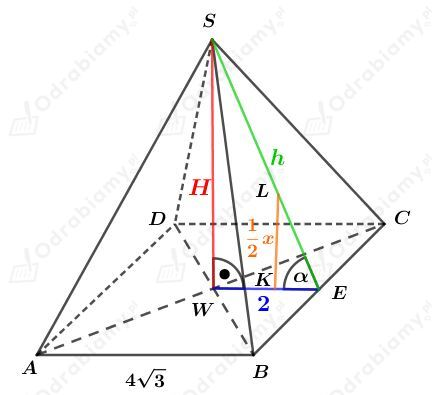
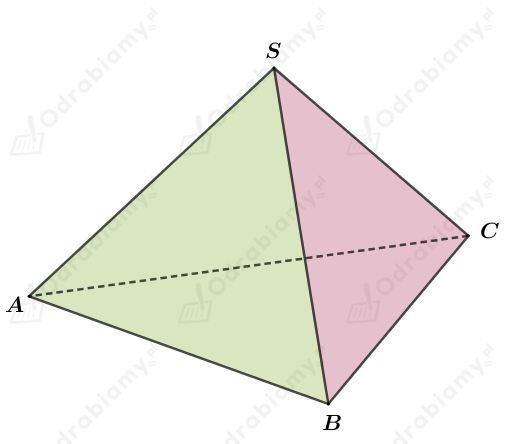
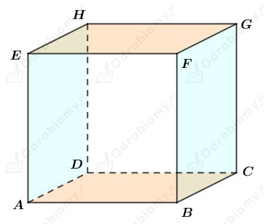
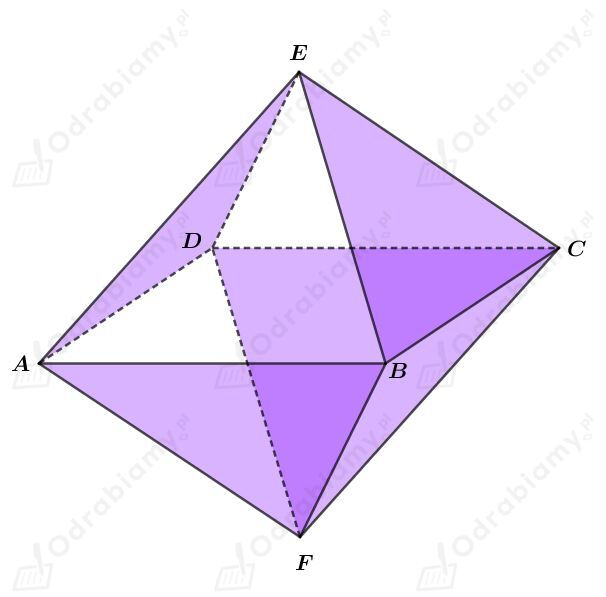
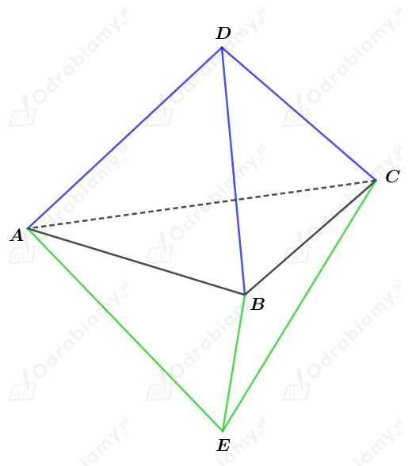

Dany jest czworościan foremny o krawędzi długości a.
Dany jest ośmiościan foremny o krawędzi długości b.
Wyznaczmy pole powierzchni czworościanu foremnego. Korzystając ze wzoru na pole trójkąta równobocznego mamy:
Wyznaczmy pole powierzchni ośmiościanu foremnego. Korzystając ze wzoru na pole trójkąta równobocznego mamy:
Z treści zadania wiemy, że:
Korzystając ze wzoru na objętość czworościanu foremnego, wiemy, że objętość danego czworościanu foremnego wynosi:
Wyznaczmy objętość ośmiościanu foremnego. Mamy:
Wyznaczmy stosunek objętości tych wielościanów. Mamy:
Wiedząc, że a=2b mamy:
Odp. Stosunek objętości tych wielościanów wynosi 2:1.
Dany jest ośmiościan foremny o krawędzi długości 4 cm.
Połączono środki ciężkości tego ośmiościanu i otrzymano sześcian o krawędzi długości x.
Środek ciężkości trójkąta równobocznego leży na jego wysokości w odległości 1/3h od jego podstawy. Korzystając ze wzoru na długość wysokości w trójkącie równobocznym mamy:
Naszkicujmy ostrosłup będący połową tego ośmiościanu:

Zauważmy, że
Wyznaczmy sinus kąta 𝛼. Mamy:
Wyznaczmy cosinus kąta 𝛼. Mamy:
Korzystając z jedynki trygonometrycznej
mamy:
Obliczmy objętość tego sześcianu.
Dany jest wielościan foremny. Jego ściany malujemy tak, aby żadne dwie krawędzie nie były tego samego koloru.
a)
Rysunek:

Zauważmy, że ściana ACS nie może być pomalowana użytymi już kolorami.
Zauważmy, że ściana ABC również nie może być pomalowana trzema z użytych już kolorów.
Odp. Należy użyć 4 kolorów.
b)
Rysunek:

Ściany ADHE i BCGF są pomalowane na taki sam kolor.
Ściany ABCD i EFGH są pomalowane na taki sam kolor.
Ściany ABFE i DCGH są pomalowane na taki sam kolor.
Odp. Należy użyć 3 kolorów.
c)
Rysunek:

Ściany ADE, BCE, ABF, DCF możemy pomalować jednym kolorem.
Pozostałe ściany możemy pomalować drugim kolorem.
Odp. Należy użyć 2 kolorów.
| Wielościanem foremnym nazywamy wielościan wypukły, którego wszystkie ściany są przystającymi wielokątami foremnymi i w każdym wierzchołku zbiega się jednakowa liczba ścian. |
Dane są dwa czterościany foremne tej samej wielkości. Złączamy je podstawami i otrzymujemy wielościan o sześciu ścianach.
Rysunek:

Zauważmy, że w wierzchołku B zbiegają się cztery ściany, a w wierzchołku D - trzy ściany.
Zatem otrzymany wielościan nie jest wielościanem foremnym.